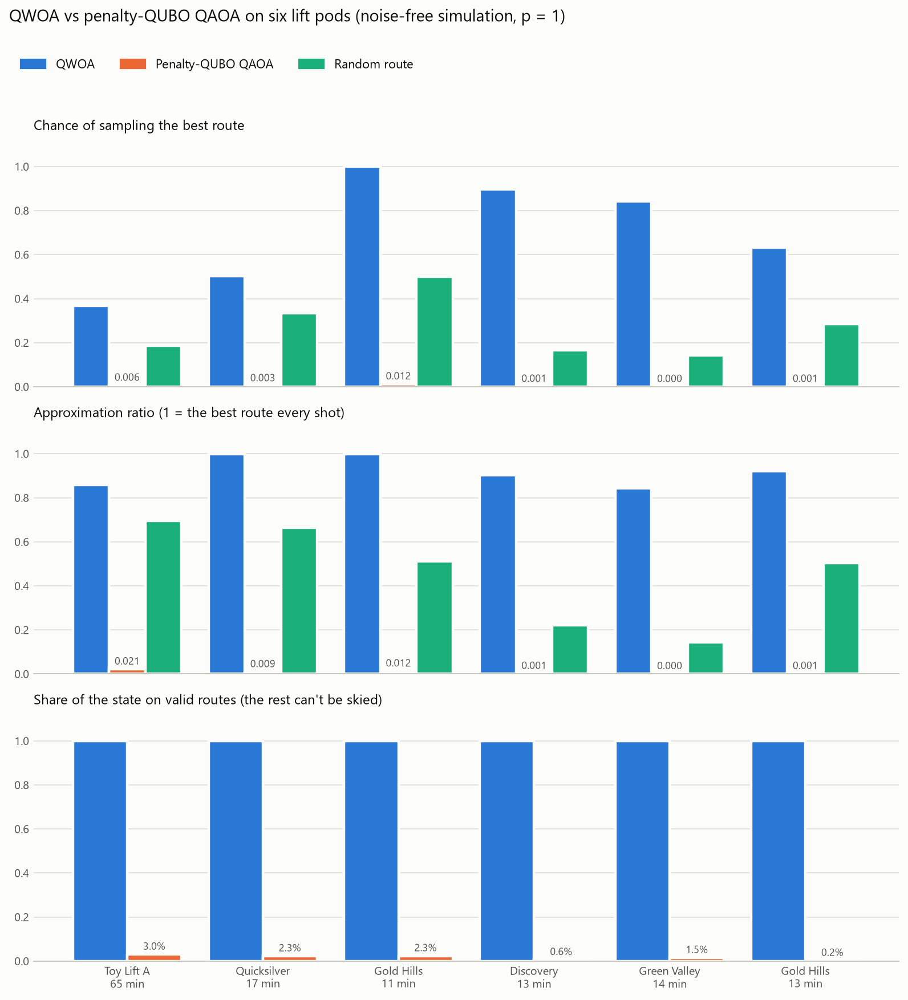
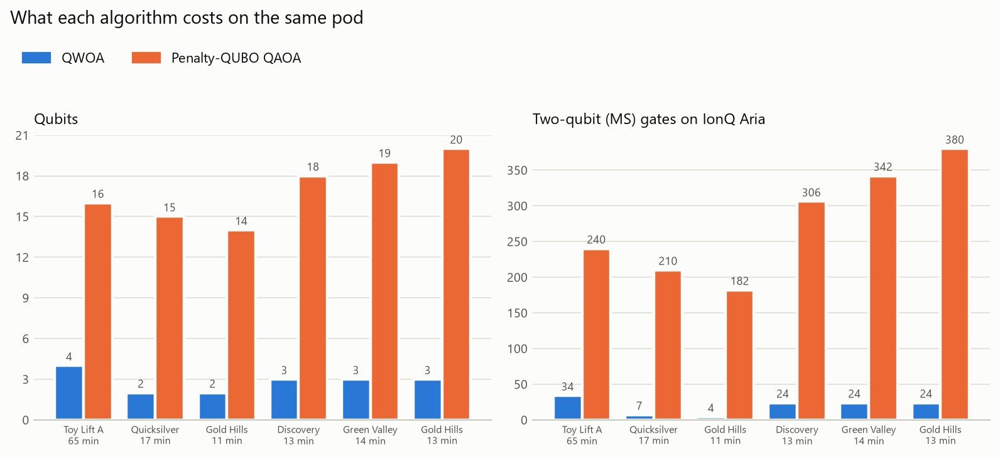
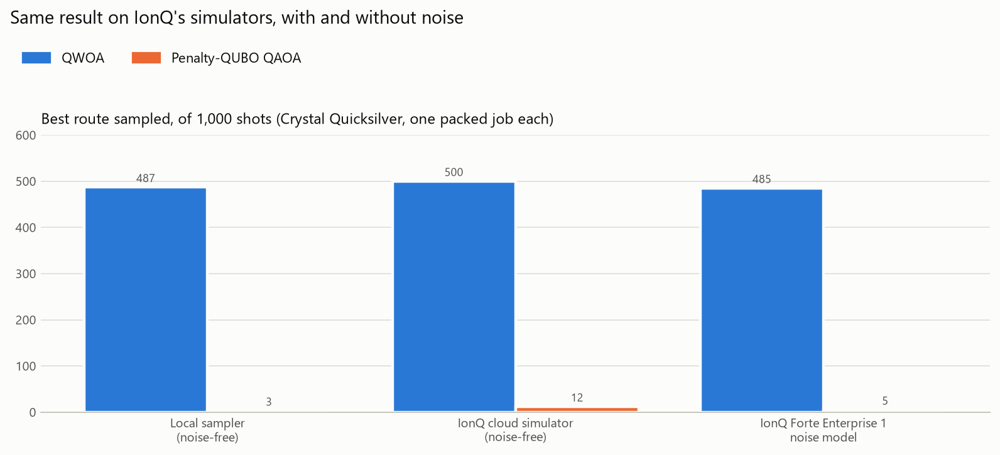

Qollab hackathon · Student Track · Quantum Impact · Colorado School of Mines
QWOA on real ski resorts: results and how we checked them
QUASAR plans the ski day with the most new vertical in the time a skier has. On small instances cut from real resorts, we ran the Quantum Walk Optimisation Algorithm (QWOA) against the textbook penalty-QUBO QAOA and a random route, and compared every result with the exact optimum.
The problem
A ski resort is a directed graph: junctions are nodes, runs give vertical drop and take time, lifts take time. Given where a skier is and how long they have, find the route that collects the most vertical. A run scores in full the first time and half on repeats, and repeat lift rides cost a little. With a time budget this is an orienteering problem, which is NP-hard.
The classical planner solves it with exact branch-and-bound on small graphs and beam search on whole resorts; the live app plans across 50 US resorts. For the quantum experiments we cut a resort into lift pods: one lift plus the runs that lead from its top back to its bottom. A pod with a short budget has few enough feasible routes to put on today's quantum computers.
The algorithms
QWOA
QWOA (Marsh & Wang 2020) is QAOA restricted to feasible solutions. We enumerate a pod's feasible routes classically and give each one an index in a ⌈log₂ M⌉-qubit register. The circuit starts in an equal superposition over the M routes, then alternates two steps p times:
- Phase separator exp(−iγC): each route picks up a phase proportional to minus its score, scaled to [−1, 1].
- Walk mixer exp(−iβA): a continuous-time quantum walk on the complete graph of routes. From the uniform start this is the Grover mixer of Bärtschi & Eidenbenz 2020. In the circuit it is U · (phase on |0…0⟩) · U†, where U prepares the uniform route state.
Because the walk only moves amplitude between routes, the ideal circuit never puts probability on a choice of runs and lifts that isn't a real route. The angles γ, β are optimized classically to minimize the expected cost.
Baselines
- Penalty-QUBO QAOA (Lucas 2014): one binary variable per bit of each edge's use count, plus slack bits for the time budget. The cost is −score plus penalties for broken flow at every junction and for missing the budget, mixed with the standard X mixer. It gets the same p and the same angle optimizer.
- Random route: pick one of the M feasible routes uniformly. This is what QWOA's starting state samples.
- Exact optimum: classical branch-and-bound, used as ground truth for every number below.
IonQ runs take one circuit per job, so both algorithms' circuits are packed side by side on disjoint qubits of one circuit, measured together, and split afterwards.
Results
Six instances: the toy resort's Lift A pod and five from four pods of Crystal Mountain, Washington (Gold Hills at two time budgets). Noise-free simulation at p = 1; numbers are exact probabilities, not samples.



The numbers
| Pod (budget) | Routes | Qubits QWOA / QAOA | MS gates | P(best) QWOA / QAOA / random | Approx. ratio QWOA / QAOA / random | P(best) at p = 2, QWOA |
|---|---|---|---|---|---|---|
| Toy Lift A (65 min) | 16 | 4 / 16 | 34 / 240 | 0.368 / 0.006 / 0.188 | 0.860 / 0.021 / 0.694 | 0.516 |
| Quicksilver (17 min) | 3 | 2 / 15 | 7 / 210 | 0.502 / 0.003 / 0.333 | 0.997 / 0.009 / 0.665 | 0.512 |
| Gold Hills (11 min) | 4 | 2 / 14 | 4 / 182 | 0.999 / 0.012 / 0.500 | 0.999 / 0.012 / 0.512 | 1.000 |
| Discovery (13 min) | 6 | 3 / 18 | 24 / 306 | 0.896 / 0.001 / 0.167 | 0.902 / 0.001 / 0.222 | 0.999 |
| Green Valley (14 min) | 7 | 3 / 19 | 24 / 342 | 0.843 / 0.000 / 0.143 | 0.843 / 0.000 / 0.143 | 1.000 |
| Gold Hills (13 min) | 7 | 3 / 20 | 24 / 380 | 0.631 / 0.001 / 0.286 | 0.919 / 0.001 / 0.503 | 0.801 |
- Approximation ratio is the mean over shots of (score − worst route) / (best − worst); a shot that isn't a route counts as the worst route, since it can't be skied.
- Quicksilver stops near 0.5 because its two best routes score 217 and 216. QWOA splits its probability between them, and its approximation ratio of 0.997 shows it lands on a near-best route almost every time.
- Depth helps: one more layer (p = 2) takes QWOA to 0.999–1.000 on three pods.
- Bigger pods are harder. On nine Crystal pods with 254–509 routes (8–9 qubits) at p = 3, QWOA still beats a random route on every pod (for example 0.300 vs 0.011 on Forest Queen Express), but most stay in the low percent. Deeper circuits are the next lever.
How we checked it
We reviewed the implementation against the published definition rather than trusting it, and every check runs from the repository.
- Matches the textbook definition. The simulator agrees with QWOA computed independently as dense matrix exponentials of the complete-graph adjacency, to 8 × 10⁻¹⁶, for 1 to 100 routes and p = 1 to 3. A self-check in CI fails if the mixer ever drifts.
- The circuit is the same algorithm. The Qiskit circuit matches the simulator amplitude by amplitude to 9 × 10⁻¹⁵, and register states that aren't routes stay at zero amplitude.
- Within the theoretical ceiling. No result in 3,000 random instances beats P(best) ≤ k(2p+1)²/M, the Grover-style bound for this mixer with k best routes out of M.
- Reproducible. Every published number regenerates exactly, including the IonQ gate counts. An ordering bug that made the QAOA baseline vary from run to run was found and fixed; QWOA's results never varied.
On hardware
We submitted the same packed job to IonQ Forte 1 hardware through Qollab (job 01a1281a-4614-78ed-bc86-1a60b5c18f9b). The run never showed a result, and fetching the job by ID through Qollab returns an IonQ API error, so no hardware result came back before the deadline. The noise-model run above is the closest result we have.
What this shows, and what it doesn't
- It shows that restricting the walk to feasible routes matters: on the same pods, with the same depth and optimizer, QWOA keeps all of its probability on real routes and finds the best one far more often, with a fraction of the qubits and gates.
- It doesn't show a speedup. The routes are enumerated classically to build QWOA's index, so these runs validate the algorithm, not quantum advantage. QWOA is a heuristic with no proven speedup; with the complete-graph mixer it can do at best Grover's quadratic improvement over trying routes.
- Where a speedup could come from: a backtracking quantum walk over the branch-and-bound tree (Montanaro 2018, 2020) needs no enumeration and gives a near-quadratic speedup on a fault-tolerant machine. With a 10⁴× slower quantum step, our extrapolation puts the break-even around 100 lifts and runs, which every real resort exceeds. Quadratic speedups are fragile under that overhead (Babbush et al. 2021).
Reproduce it
git clone https://github.com/truppelli/quasar && cd quasar
pip install -r requirements.txt
# exact optimum + QWOA on one pod
python quasar.py resorts/crystal-mountain-washington.json --pod "Rainier Express"
# the QWOA circuit checked against the simulator
python circuit.py
# QWOA vs QAOA in one packed job (the Qollab entry point)
python main.py
# regenerate these charts
pip install matplotlib && python charts.py